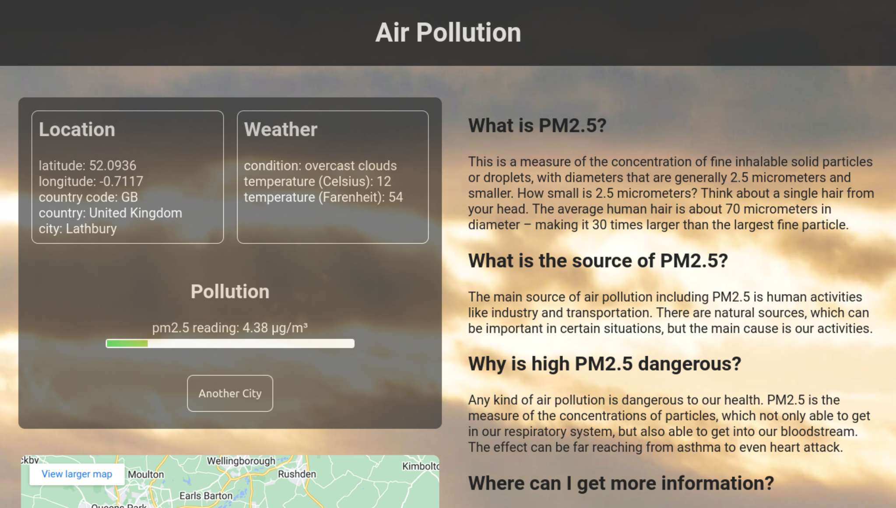
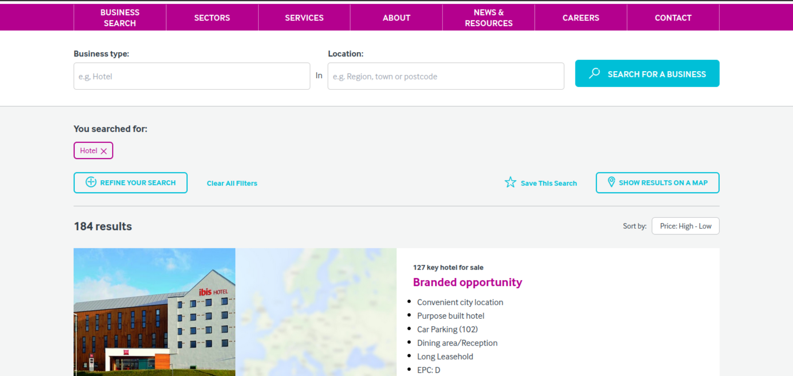

Work History
Freelance web developer
In the foundation course, I learned the basics of web development. This course took me from setting up my local development machine with Linux or macOS operational system to building a simple calculator on a website with JavaScript, HTML and CSS. I learned there the fundamental concepts of git, GitHub, text editors (VS Code), and the goal of coding languages in web development. The main emphasis is to give anybody a comprehensive basic knowledge about the main front-end coding languages with teaching good coding practices in JavaScript. It also teaches how to debug code and how to ask good questions. All this with learning in a project-based manner. The main content of this module is here. I also did a pair programming project with another learner. They have removed this project from the curriculum since that.
After the foundations, I learned JavaScript on an advanced level by creating several projects. These projects dealt with intermediate and advanced topics, and the learning culminated in a final project, which was a simplified Facebook clone in my case. This project uses the Firebase backend. I have chosen to implement this by React, just like the original site did it. I also used Bootstrap, react-bootstrap and Reactfire to connect the React app with Firebase. Later I refactored the code to use Redux as a state management tool. It let me avoid using Reactfire and separated the frontend code from handling Firebase. The roadmap, which leads here, contains topics like the following:
- OOP in JavaScript (constructor function syntax, factory functions and the module pattern, ES6 classes) with strong emphasis given to the SOLID principles, especially to the single responsibility principle and the loose coupling of objects in OOP
- Using Webpack to set up a project with dependencies. ES6 modules
- Creating DOM elements and webpages with Java Script
- Using Webpack to include assets in the bundle, Transpilers, source map
- Automated unit testing with Jest, TDD development of OOP code, pure functions and their importance
- JavaScript in practice, menus, forms, carousel components, etc
- Using web APIs, the REST API, fetching data from an API, promises, asynchronous programming in JS, avoiding call-back-hell with promises, JSON response format
- React basics up to function components and the useState and useEffect hooks
- The React router
- Data-driven functional programming in React, the principle of the single source of truth
- Using Firebase as a back-end, Firebase Firestore, Firebase Storage, Firebase Auth and cloud functions
The list of topics and projects is here.
The Odin Project has other intermediate and advanced courses about the finer details of HTML and CSS, which I completed. There are topics like semantic HTML, HTML tables, HTML forms and form-validation, CSS-grid, CSS-animations, CSS pre-processors: advantages and disadvantages, CSS frameworks: advantages and disadvantages, responsive design, accessibility standard and audit, etc. The details are here and here.
With freelancing and The Odin Project, I have strong foundations in front-end development. I am currently learning how I apply JavaScript on the server side with Node.js. I am creating smaller practice projects until I am going to be able to write my backend code for my Fakebook app. This way, I can switch the Firebase backend to my Node.js one. It is a bit deeper work than simply designing and implementing a REST API because Firebase is capable of real-time data updates. If something changes in the Firebase database, the subscribed users get an instant update. In the client-side code, the Firebase API starts a listener function, which takes over the changes in the database in the form of a parameter. This communication between the server and client requires more than simple HTTP requests and responses. It usually uses the WebSocket protocol. WebSocket is relatively simple to use in a Node.js project, but this exciting work is still in progress. The relevant part of The Odin Project is here.
The Odin Project is a comprehensive curriculum, but it cannot teach all the aspects of web development. There is plenty of other technology I am up to do in the same project-based manner, probably as a valuable part of a developer team. It is a non-excessive list:
- AWS products are widely spread. I would like to learn some DevOps on this platform because it is a well soaked after knowledge.
- Docker is a standard in the deployment of apps. I am up to learning this technology.
- Mobile devices are more and more common. I would like to get an insight into mobile development through React Native.
- As a software developer, I used to write programs which analysed data and visualised it in nice graphs. There is the D3.js library to make it easier in web development. I am certainly planning to build something with it, maybe the web version of the software, which my wife is still using as an executive manager for better quality control.
- The Java programming language is the 'English' of programming. The basic syntax is very similar to JavaScript. I am going to learn it soon.
- I am keen on taking a simple design pattern course whose code samples are in JavaScript or Java.
-
Memory Game
(05/12/2020 – 17/12/2020)
You see pictures of famous theoretical physicists. You should avoid clicking on the same image two times because you lose the game. Until you are in the game, you get famous quotes with every click. Your score is the number of clicks.
URL: https://alexerdei73.github.io/memory-game/
-
Battleship
(24/01/2021 – 21/02/2021)
It is a remake of the classic Battleship game, where you play against the computer. I made the UI, which has got some animations, by React. Before you start to play, you can rearrange your ships with a drag-and-drop-like effect. Everything works on mobile too, which was a relatively complex problem for touch devices, mainly because the code is the same for mouse and touch devices. The application logic is OOP, created by TDD.
URL: https://alexerdei73.github.io/battle-ship/
-
Where is Waldo?
(31/03/2021 – 29/04/2021)
It is my version of 'Where Is Waldo?'. You need to tag characters on a photo, and the program measures your time. You are competing with other people, and the fastest is the best. I made the game with simple HTML, CSS and JavaScript in a Webpack setup. The backend is Firebase. I used cloud functions to make the scoreboard of the gamers secure.
URL: https://alexerdei73.github.io/where-is-waldo/
-
Air Quality App
(14/02/2022 – 07/04/2022)
The webpage is one of the kindest projects for my heart because we made it together with Ben. He is a talented young JavaScript programmer. My role was to create a simple Webpack setup and the HTML and CSS parts of the site. Ben wrote the JavaScript, which fetches the APIs. Making the project was great fun for both of us. We have been keeping in touch since we finished the app.
URL: https://alexerdei73.github.io/air-quality-app/ -
Fakebook
(25/04/2021 – 25/12/2021)
It is the final project of the JavaScript curriculum. I made a fully working Facebook clone with simplified functionality. The website is mobile-friendly, although I recommend using it on a desktop. I created the project with React and the Firebase backend and used the Reactfire library to connect React with Firebase. This library mainly contains custom React hooks for this purpose. Reactfire was in an experimental state when I started building the app. Despite this, the result is engaging. Later I refactored the code using Redux instead of Reactfire. If you were curious, it is well worth creating an account. You only need an email address to do that, which is verified by Firebase Auth. Here is a short YouTube video showing the app.
Video URL: https://youtube.com/watch?v=43wA0Wh5Gko/URL: https://alexerdei73.github.io/fakebook/
-
Chef Ahmed
(around 03/2020)
Let me show you here one of my first freelance projects. It is a WordPress site. The client’s explicit request was to find free hosting. It is free, but the loading speed obviously could be much faster. The server uses the old HTTP protocol, so the website can be shown insecure in your browser, but it still works without any harmful effects.
URL: http://chefahmed.byethost33.com -
Christie & Co website
(04/2022 – 08/2022)
The Christie & Co company asked me to revise their company website. It has a vivid, new colour scheme with pure purple as a dominant colour. It is an obvious example of what effects colours have on customers. I am pretty sure this update on their old design is beneficial. I am happy that I took part in their procedure to make their decision. Unfortunately, I cannot share the code in this case.

Software Developer
- contributed to the development of Delphi programs dealing with data analysis
- studied risk assessment in the corporate and retail sector and factored this research into the developed software
- upheld strict standards for security and confidentiality according to the relevant regulations